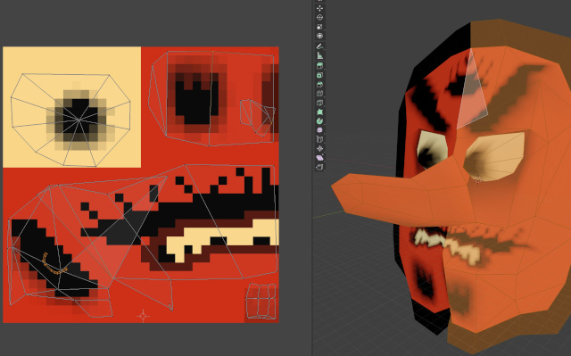
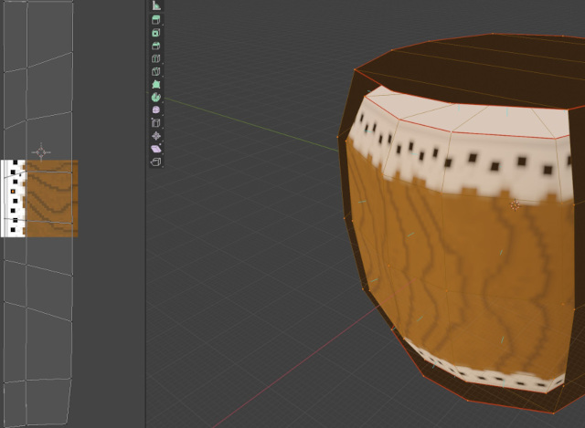

Interviews are CC BY-SA 4.0; Screenshots are likely fair use.

Kumi-Daiko Beatoff 64 is Samuli, Routalanttu, Petteri, and RufioV's submission for the N64Brew Game Jam. The game involves controlling a traditional Japanese mask attached to a Taiko drum. Using the analog stick, the player swings the drum around in an attempt to strike other masks. Kumi-Daiko Beatoff 64 feels incredibly at-home on the Nintendo 64 in a lot of ways. A big part of that is the endearing battle mode for up to four players.
What got you into Nintendo 64 homebrew?
Samuli: I like exploring different gaming platforms as a developer. I have done games from old arcade hardware to state of the art quantum computers and everything in between. N64 was one of the consoles I grew up playing at my friend's place so it was always on my radar, but wasn't the first older console I tacked. I had made games for Vectrex, Game Boy, NES, Mega Drive and PS1 before this jam. I usually learn one or two new platforms every year. It was just a matter of time for me to end up making a N64 game and this game jam was a perfect excuse to do so.
Routalanttu: The Nintendo 64, to this day, is my favorite gaming console of all time. Some of this fandom is due to conveniently timed childhood, but even when I think of it from a more analytical perspective, the N64 was the most influential platform and had the most influential games in terms of 3D game design, popularizing the analog stick and many other standards we take for granted today. Therefore, it was simply a dream of mine to have made an N64 game of my own.
Petteri: For me the jam was my first experience with N64 homebrew, and for me attending the jam was all about wanting to develop games with my friends. Unlike the others, I am somewhat too young to have ever owned a Nintendo 64 myself, although I did have a SNES growing up. I was interested to try it out despite having no prior idea what I was going into, just for the challenge. I was positively surprised by how organized and helpful the Nintendo 64 homebrew community is.
RufioV: Samuli and I have a history of jamming together or at the same events. I know he has experience making games for all kinds of consoles and I found out about this jam through him. N64 was kind of a dream console for me when it came out, so working on an N64 game was an obvious choice because it was fulfilling a childhood dream!
How did you come up with the concept for your game? Was there anything about the jam's theme that stood out to you?
Samuli: Jam's theme was good for getting a bunch of initial ideas, but even more than that we wanted a game that felt like N64 games we played as kids. So local multiplayer and analog stick were the focus in the game design. We ended up using the theme in two ways in our game's survival mode. Firstly, you can get a larger drum as a power up and keeping the large drum as you kill enemies is the main strategy for scoring high. Secondly, main enemies get smaller the further you progress making the game harder. In versus multiplayer we didn't really do anything with the theme as it was just a bonus game mode we added for fun. Biggest inspiration for gameplay was an old pc game called Hammerfight, still analog stick makes the game feel totally different compared to mouse driven combat in Hammerfight.
Routalanttu: Looking back on those iconic local multiplayer moments that classic N64 games offered, we wanted the game to have at least some use of all the 4 controller ports. Going beyond the “get stuff running on the hardware” goal, employing the analog stick into fun, easily accessible use was of great importance. Trying to project a mindset that we would have had if we were grown-up game developers in the mid-90s, we wanted to make a game that showcased the unique possibilities of the then-novel control method. Truth be told, the theme was a little bit overshadowed by our focus on the fun game feel, although the initial thought of the drum/hammer growing in size still remains in the singleplayer mode of the game somewhat.
Petteri: How did you come up with the concept for your game? Was there anything about the jam's theme that stood out to you? The theme 'size' made me think of related concepts such as growth and mass, and creating a physics engine appealed to be as I wanted to work on something technically interesting. A concept which would work in both singleplayer and multiplayer while allowing us to share most of the code was also a priority to us. Being able to play the game together is a big part of the appeal of console games, while having a singleplayer mode would still be a necessity for most people wanting to try the game out, especially in the current situation.
RufioV: It's not often that I have much of a hand in jam games outside of audio. It's a unique challenge in that way. I'm essentially presented with a still-developing idea that I have to bring life to with sound. Most people like to have more say in the development of a game, but for game jams I'm usually more interested in making music and connecting to people. I read message after message between my teammates, but kept my hands off the wheel! This way I'm not a part of creating my own assignment as much as having it dropped on me and then flexing my creative muscles.
What tools did you end up using to create your game?
Samuli: For content, I did 3D modeling and animation in Blender and painted textures with Krita. I coded in Win10 with CLion and compiled and built the game in a virtual WinXP machine. We used libultra with n64 audio tools. I was responsible for general gameplay logic, menus and audio programming. For playtesting we used Project64 emulators with Parsec to allow remotely local multiplayer testing as we couldn't gather physically as a team. During development we usually checked the game with Cen64 or EverDrive.
Routalanttu: As Samuli and Petteri did the technical heavy lifting, my tools usage story is probably the most boring one. We playtested the multiplayer functionality of the game online using Project64, Xbox gamepads and Parsec (communicating over Discord and recording our gameplay with OBS). For the cover art, I moved the game’s Blender-made assets around in Unity for a cool pose and then retouched the images in Photoshop.
Petteri: My development environment different from Samuli in that I mainly programmed in Debian (running in VMware player), since I did not have to work with any Win XP -only audio tools. Building worked fine thanks to wine, and since I kept the project in a shared directory, it was easy to playtest in Project64 on Windows 10 whenever needed. For importing the models that Samuli made, we used objn64.
RufioV: My main DAW (digital audio workstation) is FL Studio. I used a number of libraries that included instruments from around the world (tuned gongs, Japanese shakuhachi, various percussive sounds, etc). It was tough mostly for technical reasons. I really love to go big with the music I make for game jams, but the song's file size couldn't be too large and we weren't certain it would loop. The idea was instead to try to create a musical world, for which I made a short and simple drum loop and some thematic SFX to sit on top.
Is there anything you particularily enjoy about your game, or is there something you worked on that you're particularily proud of?
Samuli: I think the game feel turned out great. Once you get hang of the physics it is great fun to battle with your friends. Single player difficulty curve also ended up being more balanced than I expected. I didn't have much time to tune it, so it could have been much worse. My current record in survival mode is 150.
Routalanttu: By far the most satisfying thing about Kumi-Daiko Beatoff 64 is that the versus mode is an absolute blast to play! When the jam was over, I showed the game to a friend and ended up playing against him for 5 hours straight with no initial intention to do so. Instead of being just another jam game to be forgotten, Kumi-Daiko Beatoff 64 feels like we took a time machine to 1995 and made a Spaceworld tech demo for the analog stick, showcasing how even the simplest interactions can generate endless fun with friends. (I'm also super proud that the team approved the name I came up with :D)
Petteri: On the technical side I worked on the rendering and physics. I had no prior experience developing software for hardware older than myself, so I was curious if we would even be able to pull our concept off on N64. I'm happy with how things turned out, the collisions and rope physics work reliably and the floating point math capabilities of N64 turned out to be much more powerful than I was expecting, so performance was surprisingly never an issue.
RufioV: I'm definitely proud of the fact that we made a game that people agreed deserved acknowledgment among the submissions. Kumi-daiko Beatoff 64 makes me think of a Mario Party game (and I loved N64 Mario Party). In general, the jam happened at a time when I was particularly low energy because of pandemic living, so I would say that I'm proud of myself just for choosing to participate and seeing the whole thing through. I was fortunate to work with a talented team that also gave me a lot of room to work at my own pace.
The 3D models of the masks are interesting as far as Nintendo 64 games go. Even though they don't occupy a lot of space onscreen, they have a lot of nice texture detail. The dark outline gives a fun sense of shape as the mask wiggles, especially at 240p. I especially love the way Tengu's nose moves. What was it like coming up with the designs for them?
Samuli: I used a lot of reference images from Japanese festival and theatre masks and made up my own variations on them. I put in quite a lot of details in as we weren't sure how large everything would be displayed. In the end we had to scale things down, but you can see models in full details in the main menu at least. Even though enemy models themselves were not animated we added as much movement to the game in the code as we could, hovering behaviour, tilting into movement direction, screenshake and physics falling with unrestricted rotation on hit.
We didn't have to use full outline cage in any model as they were looked only from front, but the drum has almost complete cage as it could be seen from so many angles.
Fun fact: everything you see in the game is a 3D model, we didn't spend any time looking into 2D rendering due time constraints. I especially enjoyed making the explosion animation frames in 3D.
The Nintendo 64 holds a special place in your heart, and rightly so! It's an interesting console of a unique time. I'ts interesting that you tried to get into the mind of a 1995 game developer. If you were to work on a second Nintendo 64 game, would you want to see Kumi-Daiko Beatoff 64's ideas expanded in some way? Or try something different?
Routalanttu: In the early design talks, we discussed how the mechanics could be expanded upon, like having levels with platforms or making the mask and drum switch places by pressing a button etc., but even if features like that had been implemented, they might have made Kumi-Daiko Beatoff's gameplay needlessly complex and less approachable. If I were to work on a second N64 game (of similar scope), I would probably try something a little different, but still make a couch multiplayer game that works around super simple control and easily understandable physical interactions. Maybe a ninja rope battle game where yo-yo-looking characters with hookshots would bounce around in tight spaces trying to break each other with high-speed collisions, reeling their ropes in during swings to gain momentum, or a ball game where circular movements with the analog stick would translate to paddle swings on characters that move around inside a pinball/foosball-inspired table world.
No matter what the core mechanical idea ended up being, Rare-like charm in the aesthetics would be a fun design challenge.
Throwing the drum around has a nice difficlty to it. It's satisfying when you get a hit in, but you have to be careful. What was it like developing the physics and controls for the game? Did you have to iterate to find a good balance?
Petteri: Making hits satisfying, especially in the multiplayer gamemodes, was certainly a priority for me. I wanted to make the drum hits feel powerful, like it smashes into the other players with an enormous amount of force. But I could not simply make the drums super-heavy compared to the players, as that would soon cause your own drum hinder your movement. So for the sake of fun and gameplay, I decided to cheat on the physics a bit and have the drum use greater mass in drum-player collisions than in the rope physics calculations. Breaking the laws of physics does come with a cost, however, since this caused each hit to add energy to the system. More energy means more collisions, and without careful balancing, the physics would explode with everything bouncing around at ever-increasing speeds. The current balance between fun, gameplay, and numerical stability was eventually found through iteration.
Probably every Nintendo 64 homebrew developer will agree that audio has a lot of technical constraints. If you were able to "go big" for this jam, what sort of music would you make? What would you do if unconstrained?
RufioV: I would have loved to make a track that was longer, full of more happening melodies & earworms. My jam tracks are known for their bop! Kumi-daiko Beatoff 64 would've been perfect for a catchy song with the vibe of being at an East Asian festival. Definitely wouldn't have made the song mono if given the choice, which is a restriction I normally only experience when making music for mobile platforms.
If someone wanted to get into homebrew today, would you have any advice or suggestions for them?
Samuli: When talking about homebrew for older consoles, I always recommend GB Studio which is one of the easiest tools to begin making games in general. You don't need any technical background for using it and you will have a fully working Game Boy game done in a day.
As for N64 spesifically I would highly recommend getting some experience in coding elsewhere before tackling it. N64 can be quite overwhelming for a beginner. Once you feel comfortable giving it a go make sure to set up a good coding and testing enviroment. Just spend few days setting up a smooth workflow. Write build and utility scripts, integrate tools that other people have provided for N64 community and configure your emulators and testing hardware.
Routalanttu: Do it! The feeling of having something fun that you took part in creating running on that favorite piece of gaming hardware makes all the time and effort worth it. Even if it was a an inopportune time for me to take part in this, I'm glad I did not miss this opportunity. Optimally, do it with friends and make use of the community's resources!
Petteri: I would suggest making use of the many open-source games made during the latest N64Brew game jam as learning resources. When we started with our jam project, there were many minimal examples available on the internet, but it was difficult to find any complete projects that would have covered all the tools and libraries needed to get a full game implemented. Much of the information found on the internet was also out-of-date (such compiling in windows xp instead of using linux+wine). So for someone with a programming background wanting to get started with N64 homebrew today, I would recommend grabbing the source code for Kumi-Daiko Beatoff 64 (or any other of the great projects made during the latest jam) and using that as a starting point for your own project.
RufioV: I loved doing this and absolutely recommend to anyone else to do it! If you're an audio person, definitely look up some technical restrictions so you understand what is absolutely out of scope. Samuli told me that in another jam on a different game, they had a situation something like having to remove a level to make room for music--whatever it was... you don't want that!! Do just the tiniest bit of homework to realize what you're up against. And then give it your all ;)
Website by Daniel Savage
Interviews are CC BY-SA 4.0; Screenshots are likely fair use.